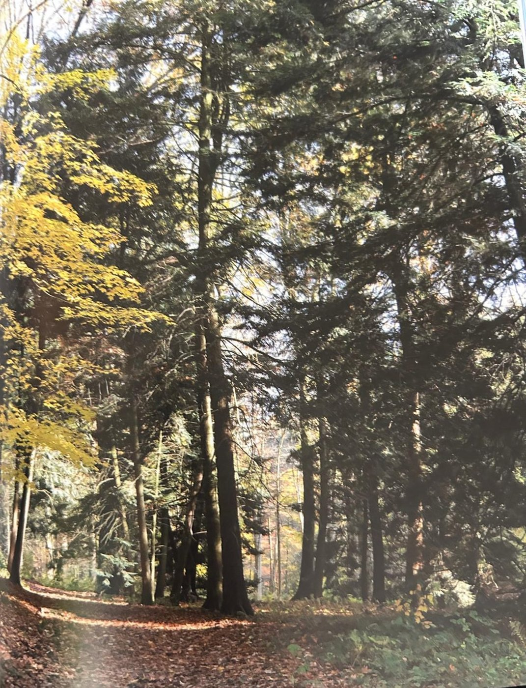
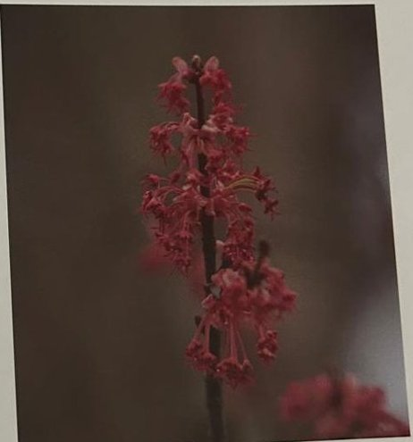

Groepen › Nieuwe Wereld
18. New Hampshire, White Mountains

New England, een groepsnaam voor de noord-oostelijke staten van de USA, is bekend voor zijn Indian summer, doelend op warme temperaturen met een spectaculaire verkleuring van de alomtegenwoordige bossen in de vroege herfst. De huidige bossen zijn veelal van een tweede of derde generatie, maar houden goed stand. Vanwege de veelal ondiepe en rotsige bodems is het terrein minder geschikt voor landbouw. Het reusachtige White Mountains National Forest in New Hampshire, meer dan 3000 km² groot, omvat naaldbossen van het ‘Hemlock/Weymouthden’ type en loofbossen van het ‘Esdoorn/Beuk/Berk’ type, waarin o.m. Suikeresdoorn, Rode Esdoorn en Zilveresdoorn de plak zwaaien. Deze bostypen kwamen we eerder al tegen in Groep 12. Het blad van de suikeresdoorn is het embleem van Canada en de boom is bekend als leverancier van maple sirup, lekker op ontbijtpannekoeken. De Gele berk en de Suikerberk lijken sterk op elkaar, maar veel minder op andere berken dan de Papierberk van het noorden, die ons vertrouwder voorkomt. Zowel de esdoorns als de berken leveren goed hout voor de meubelindustrie.
Uit het boek
1,60 ha · 30 soorten · 802 bomen
- Een hemlockspar van 1905 meet 405 cm. De twijgjes van de gele berk ruiken naar wintergreen.


Bron: Geografisch Arboretum Tervuren. Een wereldreis rond bomen (2020), p. 168 en volgende.
Deelgroepen
- 18 – New Hampshire
Soorten in deze groep (30)
- Picea rubensRode spar · 300 bomen
- Tsuga canadensisOost-Amerikaanse hemlockspar · 67 bomen
- Acer saccharinumZilveresdoorn · 56 bomen
- Acer saccharumSuikeresdoorn · 50 bomen
- Thuja occidentalisWesterse levensboom · 50 bomen
- Betula alleghaniensisGele berk · 43 bomen
- Carya cordiformisBitternoot hickory · 38 bomen
- Quercus rubraAmerikaanse eik · 36 bomen
- Prunus serotinaAmerikaanse vogelkers · 34 bomen
- Fagus grandifoliaGrootbladige beuk · 26 bomen
- Fraxinus americanaWitte es · 19 bomen
- Pinus strobusWeymouthden · 19 bomen
- Quercus palustrisMoeraseik · 17 bomen
- Amorpha fruticosaValse indigostruik · 14 bomen
- Crataegus collina5 bomen
- Diervilla sessilifolia5 bomen
- Crataegus species4 bomen
- Crataegus coccinoides var. dilatata3 bomen
- Cornus species2 bomen
- Crataegus intricata2 bomen
- Juniperus virginianaVirginische jeneverbes · 2 bomen
- Quercus phellosWilgenbladeik · 2 bomen
- Carpinus carolinianaAmerikaanse haagbeuk · 1 boom
- Juglans cinereaGrijze walnoot · 1 boom
- Pinus rigidaPekden · 1 boom
- Populus tremuloidesAmerikaanse ratelpopulier · 1 boom
- Quercus bicolorTweekleurige eik · 1 boom
- Quercus ilicifoliaDwergeik · 1 boom
- Quercus prinus1 boom
- Quercus species1 boom
Tekst en foto: arboretum-tervuren.be (Koninklijke Schenking), met toestemming gebruikt.